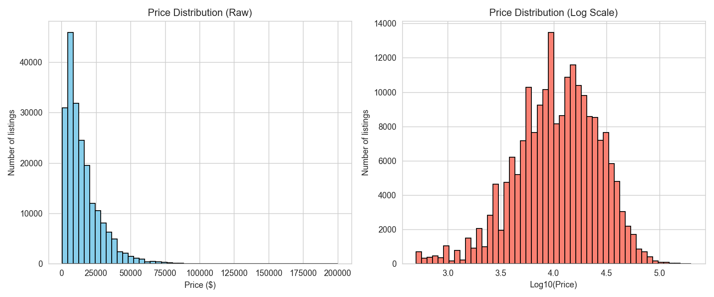
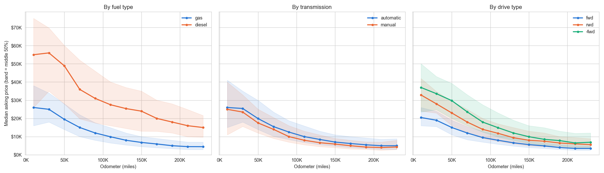
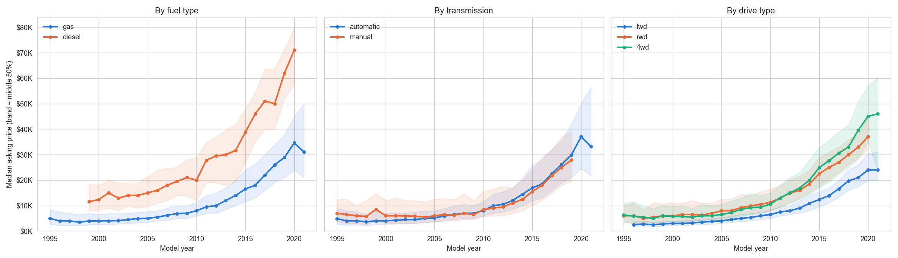
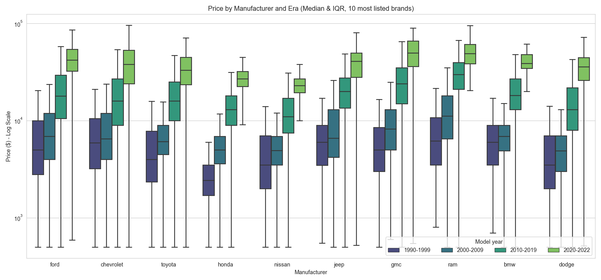
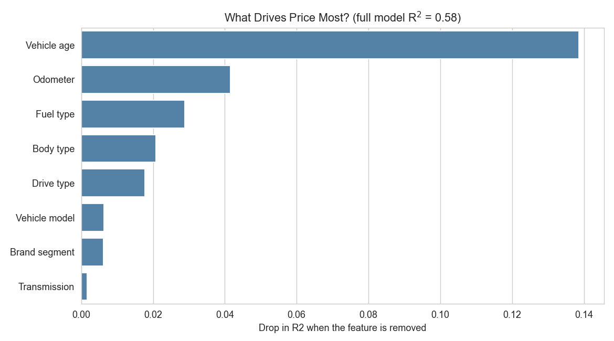
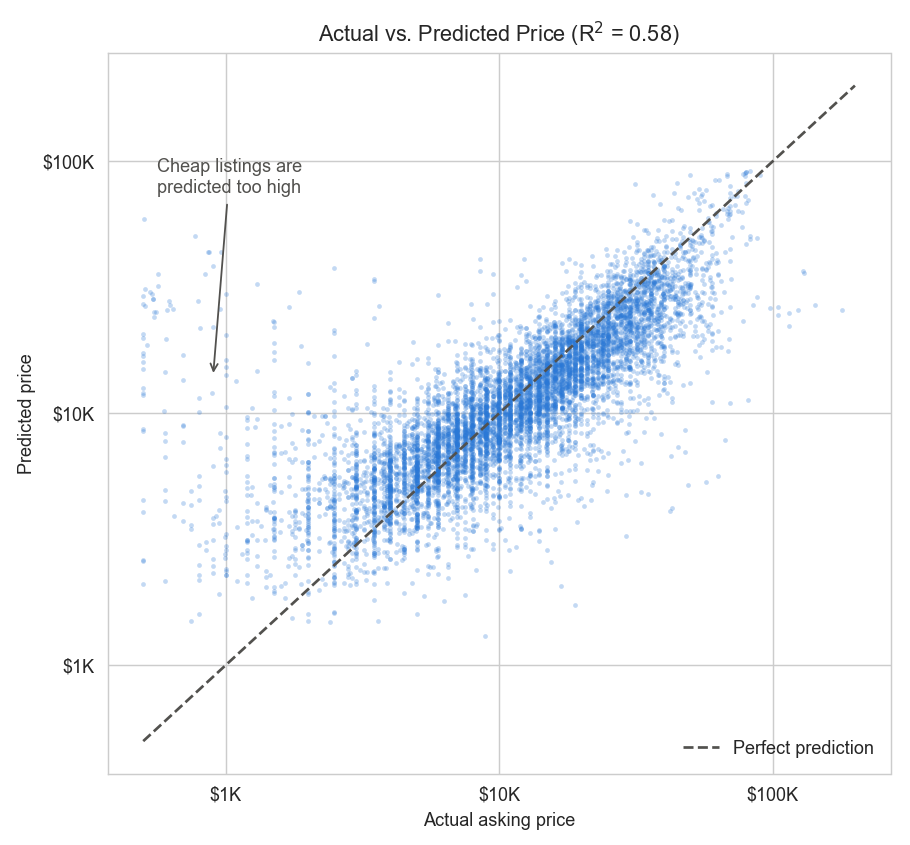

This stage moves from data cleaning into exploratory analysis, feature engineering and a first price model. Asking prices are heavily right-skewed, so the analysis works on the log of price. Vehicle age and miles-per-year were engineered as new features and brands were grouped into Luxury and Standard tiers. A linear regression on log(price) reached an R² of 0.58 on held-out listings. Vehicle age is the strongest price driver: each extra year lowers the asking price by about 6.8%, and every 10,000 miles by about 3.6%, with body type, fuel, drive and brand tier held fixed.




| Feature | Logic | Rationale |
|---|---|---|
| vehicle_age | 2021 − model year (minimum 0) | Converts model year into an interpretable depreciation signal. The reference year is 2021 because every ad was posted in April–May 2021, so this is the age at listing. |
| miles_per_year | odometer ÷ max(vehicle_age, 1) | Normalizes usage intensity across ages. Floor of 1 applied to avoid division-by-zero for new vehicles (age = 0). |
| brand_segment | Luxury / Standard classification | Groups manufacturers into two market tiers using a fixed, explicit list, reducing cardinality while preserving a brand value signal. |

